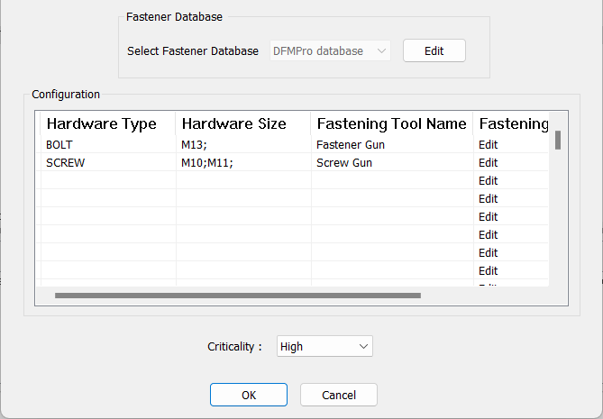
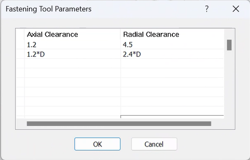
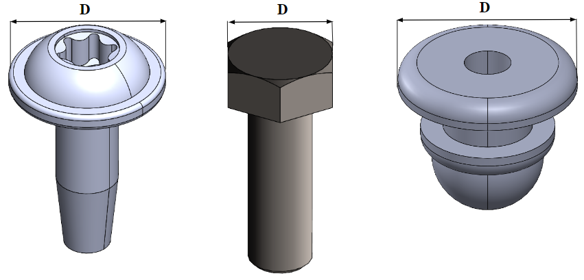
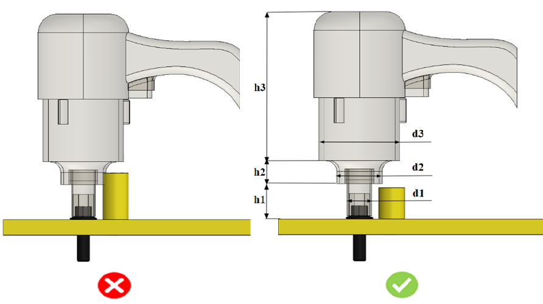

締結工具のアクセス性パラメータに基づき、このルールはアセンブリ内の留め具のアクセス性をチェックします。
留め具にアクセスするためには、締結工具のための十分なスペースが必要であり、これにより締結作業の容易性が向上します。
このルールを使用するために、ユーザーは以下の入力を提供する必要があります:
留め具：ルールを検証するために使用される留め具の種類の名称。
留め具は ハードウェアデータベース を通じて追加する必要があります。
Hardware Type 列は、ハードウェアタイプを構成するために使用されます。ユーザーは名前を入力する際にワイルドカード文字を使用できますが、ハードウェアデータベース内の名称と正しく一致している必要があります。
Hardware Size 列は、ハードウェアサイズを構成するために使用されます。サイズ名にはワイルドカード文字を使用できます。サイズはハードウェアデータベース内のサイズと正しく一致している必要があります。また、同一行内でセミコロン（;）区切りにより複数のサイズを構成できます。
Fastening Tool Name 列は、締結工具の名称を指定するための列です。
Fastening Tool Accessibility Parameters 列は、工具のアクセス性パラメータを構成するために使用されます。ユーザーは、この列の Edit オプションをクリックすることで、アクセス性パラメータを構成できます。

この表では、ユーザーは高さの値とともに直径方向のクリアランスを構成できます。
ユーザーは、工具の高さ方向クリアランスおよび工具の直径方向クリアランスを、絶対値として、または以下の表に示すようにハードウェアのヘッド直径に基づく形式で構成できます。


D = 留め具ヘッド直径（例：ボルトヘッド、ねじヘッド、リベット、ナット）

d1、d2、d3 = 工具の半径方向クリアランス（d）
h1、h2、h3 = 工具の軸方向クリアランス（h）
注記:
「締結工具寸法に基づく留め具のアクセス性」ルールで必須となるフィールドは、Hardware Name、Hardware Type、および Size です。
このルールは、トップレベルのアセンブリ部品に対して、DFMPro 設定に基づいて実行できます。